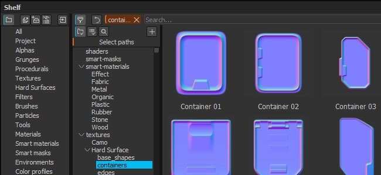
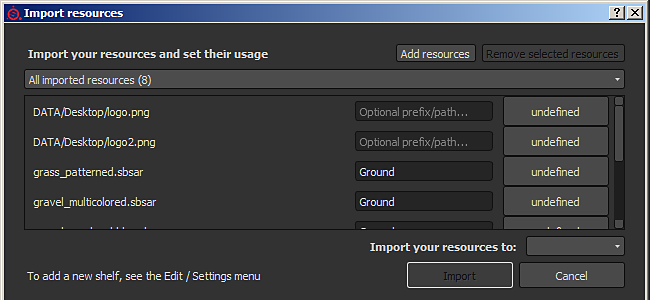
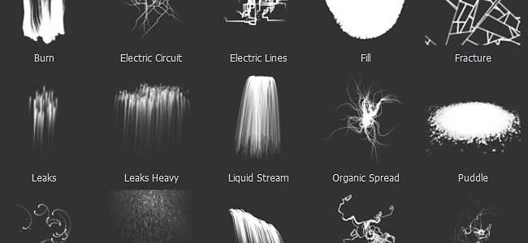

Substance Painter 2.4 focus on improving the shelf window as well as the managements of resources.
Release Date : 27 October 2016

The new shelf window provide a better organisation of resources alongside new ways of filtering content. We added the possibility to create custom presets where each preset has its own filtering (allowing to quickly switch between different queries). These presets can also be isolated into a new window, offering a way to have multiple views of the shelf and not only one like before. The filtering also offer a way to browse the hierarchy of folders on the disk, becoming handy when refining a more general query. We also improved the context menu (when right-clicking on a resource) to provide more useful information.
For creating advanced queries, see the dedicated part of the documentation : Advanced search queries

With the rework of the shelf we also improved the resource import window. The window is now more consistant and can be called in three different ways : via the file menu, via the button in the shelf window, or just like before by drag and dropping a resource into the shelf window. The new window allow to quickly set the usage for multiple resources at once, which means you don't have to drag and drop resources into the right location first anymore. We also added the possibility to specify a custom path to create sub-folders in order to take advantage of the new tree view.
For more details, see the dedicated part of the documentation : Adding resources via the import window

We reworked the previous particles preset to be more ready to use (especially the Rain preset). We also took this opportunity to add new presets with new behaviors : take a look at Electric Circuit, Electric Lines, Rococo and Veins Small !
The new shelf features and use is covered in our latest tutorial :
(Released 28 October 2016)
Fixed :
(Released 27 October 2016)
Added :
Fixed :